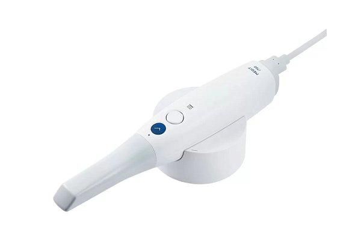

3D-сканер Medit i700Цифровая модель зубов
ЦЕНТР СТОМАТОЛОГИИ «ПОДМОСКОВЬЕ»
Верните себе здоровые зубы и уверенность улыбки
Имплантация в Ярославле с гарантией результата

одномоментных имплантаций
восстановлений по методикам All-on-4 / All-on-6